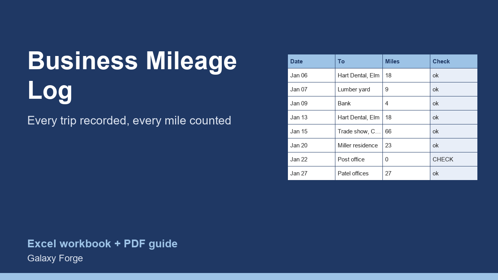

A trip-by-trip mileage log with the date, destination, purpose and odometer readings, totals by purpose, odometer error checks, and the standard-mileage deduction at the rate you enter.
Self-employed people and small business owners lose deductions to poor records more than to anything else. A mileage claim needs a log kept as you go, not a total estimated at tax time.
IRS Publication 463 asks for records that show the amount (miles), the time (date), the place (destination) and the business purpose of each trip. This log has a column for each, calculates the miles from odometer readings, flags readings that cannot be right, and totals the business miles and the deduction at the standard mileage rate you enter.
The Summary groups miles by purpose (client visits, supplies, deliveries and more) so you can see where the driving goes and answer questions about it later.
1) On Settings, enter the standard mileage rate that applies to the trips (the example uses 72.5 cents, the IRS business rate set for January 2026; check IRS.gov for any change during the year) and the year's opening and closing odometer readings if you want the business-use share. 2) On Mileage Log, add a row for each business trip as it happens: date, from, to, purpose, category, and the odometer at the start and end. 3) Fix any row marked CHECK. 4) The Summary shows business miles, the deduction, miles by category and the business share of all driving.
Price: $9, one-time. Download: business_mileage_log_deduction_tracker.xlsx (Settings, Mileage Log, Summary) and this guide. Works in Excel 2016 or later, Excel for Mac and Excel on the web; opens in Google Sheets and LibreOffice.
New product, listed 2026-10-24: no sales or reviews yet. Example figures in the workbook are illustrative.
This workbook is a record-keeping tool, not tax advice. Whether you can deduct vehicle costs, and whether the standard mileage rate or actual expenses is better for you, depends on your situation; confirm with IRS Publication 463 and a tax professional.